Contents
load data
close all; clear; clc load external/examples/EEG.mat disp("Data size:") disp(size(data))
Data size:
482 32400
Read labels
row_label_names = string(label_names{1});
col_label_names = string(label_names{2});
% Rows
operations = [obs_l{1,:}];
times = [obs_l{2,:}];
% Cols
subjects = [var_l{1,:}];
channels = [var_l{2,:}];
freqs = [var_l{3,:}];
Filter frequencies
data_filtered = data; if true idx = freqs <= 15; %Hz data_filtered = data_filtered(:,idx); freqs_filtered = freqs(idx); subjects_filtered = subjects(idx); channels_filtered = channels(idx); end disp("Filtered data size:") disp(size(data_filtered))
Filtered data size:
482 10800
Decorate labels
Rows
operations_label = string(categorical(operations, [0, 1], {'Baseline', 'Arithmetic'}));
times_label = times;
% Cols
subjects_label = "subject " + subjects_filtered;
channels_label = "channel " + channels_filtered;
freqs_label = freqs_filtered;
disp("Labels ready")
Labels ready
Var PCA plot
X = preprocess2D(data_filtered, 'Preprocessing', 1); varPca(X, "PCs", 1:10, "Preprocessing", 0, "PlotCkf", true);
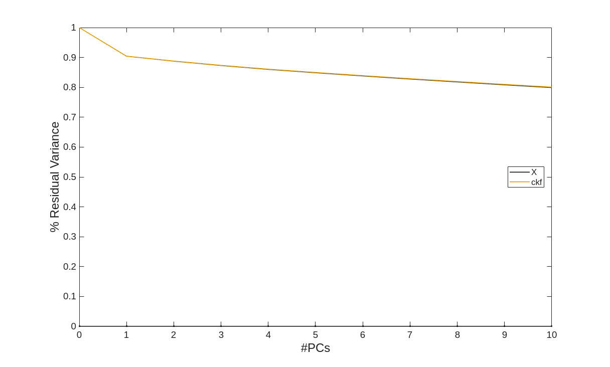
Model
model.lvs=1:2;
model = pcaEig(X,'PCs',model.lvs);
model.var = trace(X'*X);
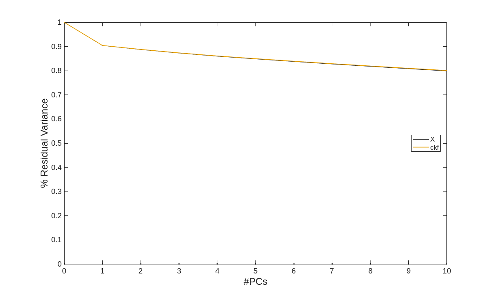
Scores plot
disp("Plotting scores...") scores(model, "ObsLabel", times_label, "ObsClass", times_label, "Color", "parula"); title("Time"); % scores(model, "ObsLabel", subjects_label, "ObsClass", subjects_label, "Color", "parula"); title("Subjects");legend('off'); scores(model, "ObsLabel", operations_label, "ObsClass", operations_label, "Color", "parula"); title("Operations");
Plotting scores...
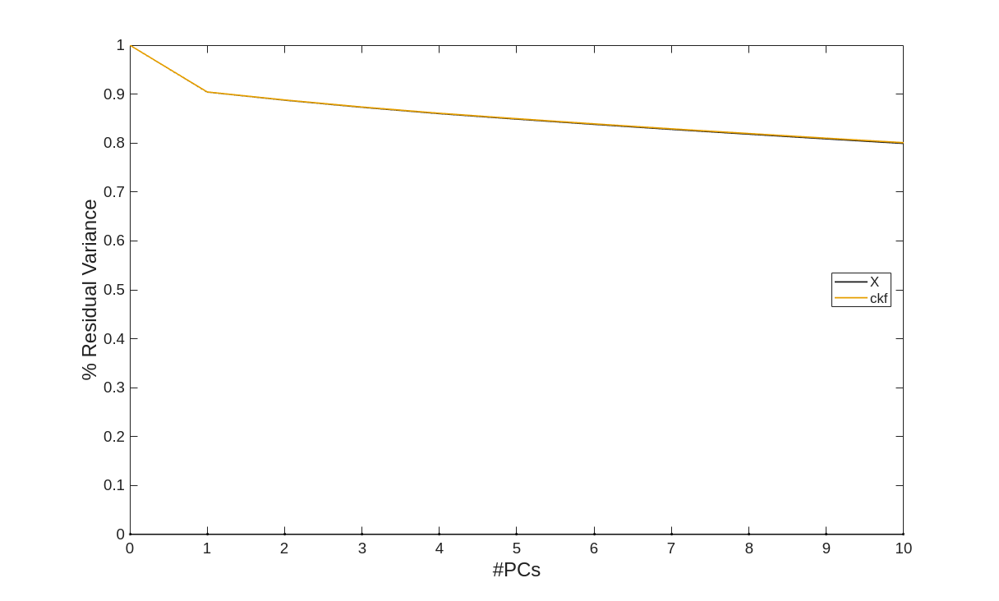
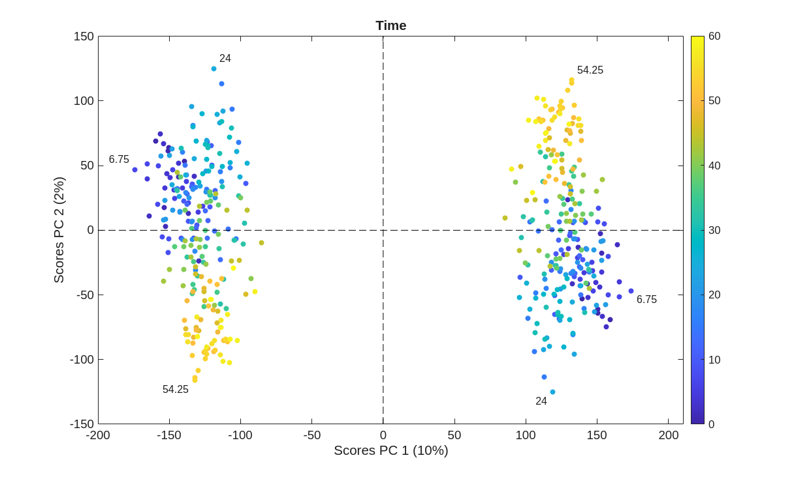
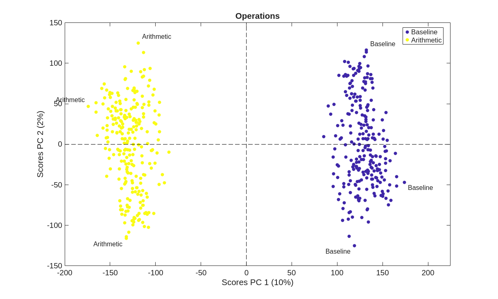
Loadings plots
disp("Plotting loadings...") loadings(model, "VarsLabel", subjects_label, "VarsClass", subjects_label); title("Subjects"); loadings(model, "VarsLabel", channels_label, "VarsClass", channels_label, 'Color', 'parula'); title("Channels"); loadings(model, "VarsLabel", freqs_label, "VarsClass", freqs_label, 'Color', 'parula'); title("Frequencies");
Plotting loadings...
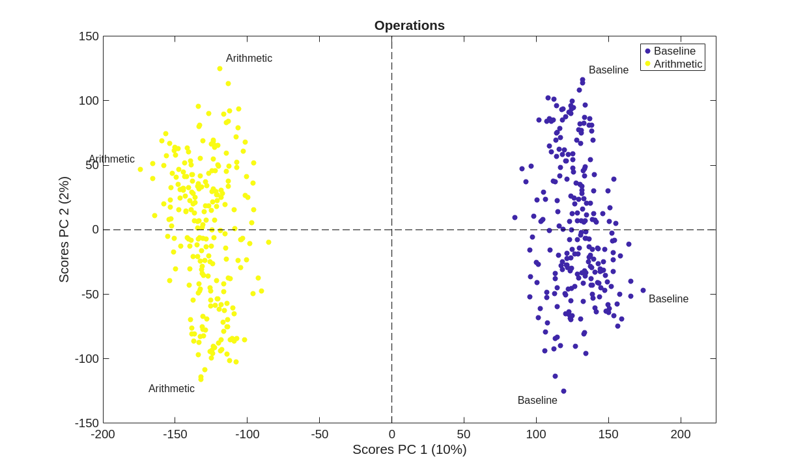
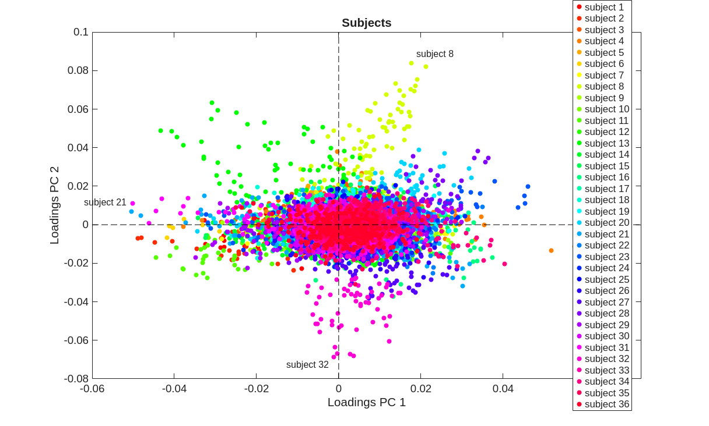
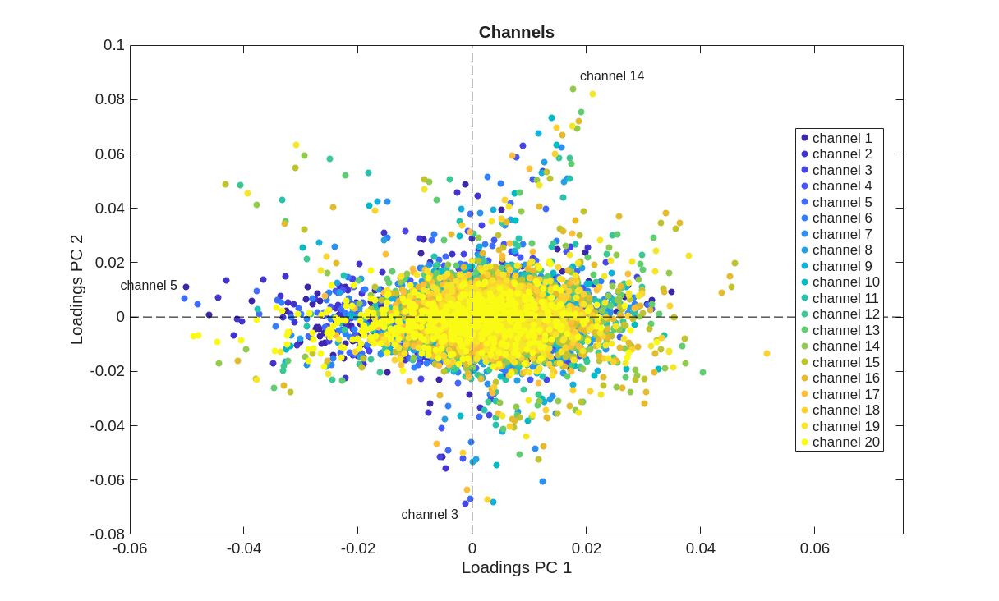
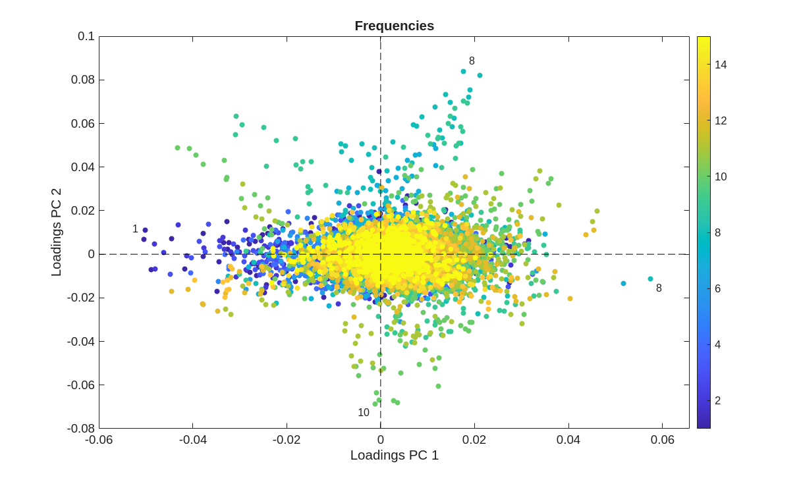
oMEDA: Baseline vs. Arithmetic
Baseline: -1 | Arithmetic: +1
dummy = ones(size(operations_label)); idx = (operations == 0); dummy(idx) = -1; omeda_vec = omeda(X, dummy, model.loads);
close all;
if true subject_ids = 5:10; channel_id = 4; for subject_id = subject_ids idx1 = channels_filtered == channel_id; idx2 = subjects_filtered == subject_id; idx = idx1 & idx2; omeda_vec_filtered = omeda_vec(idx); plotVec(omeda_vec_filtered, 'ObsClass', freqs_label(idx)); title("oMEDA Baseline vs. Arithmetic | Subject " + ... string(subject_id)+", Channel " + string(channel_id)) xlabel("Frequencies (Hz)") end end
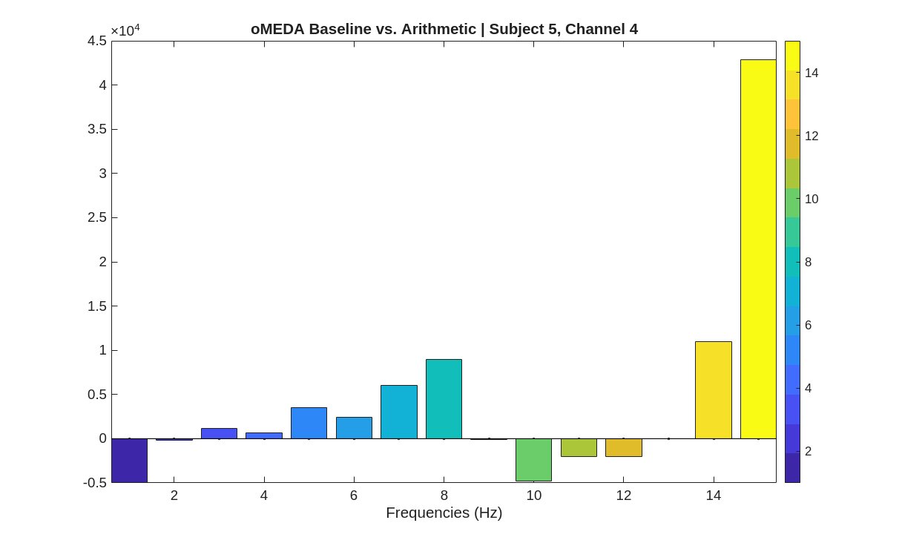
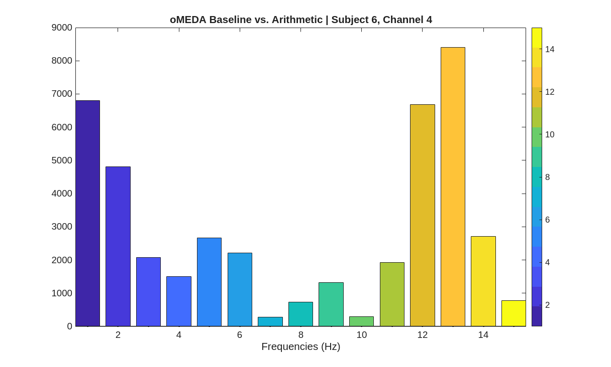
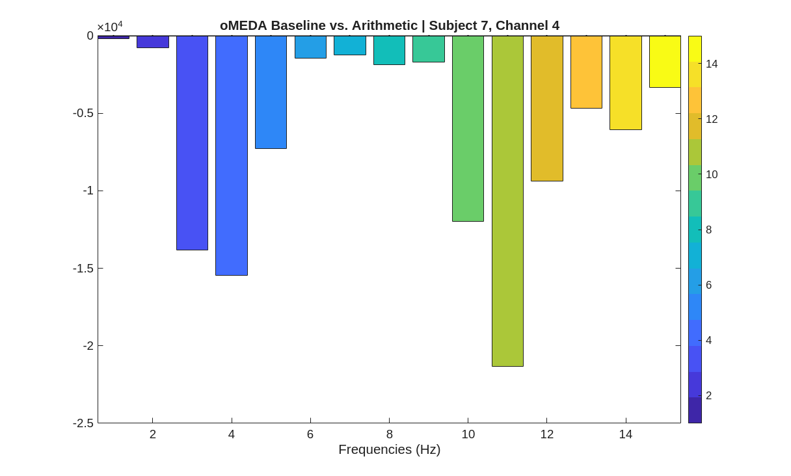
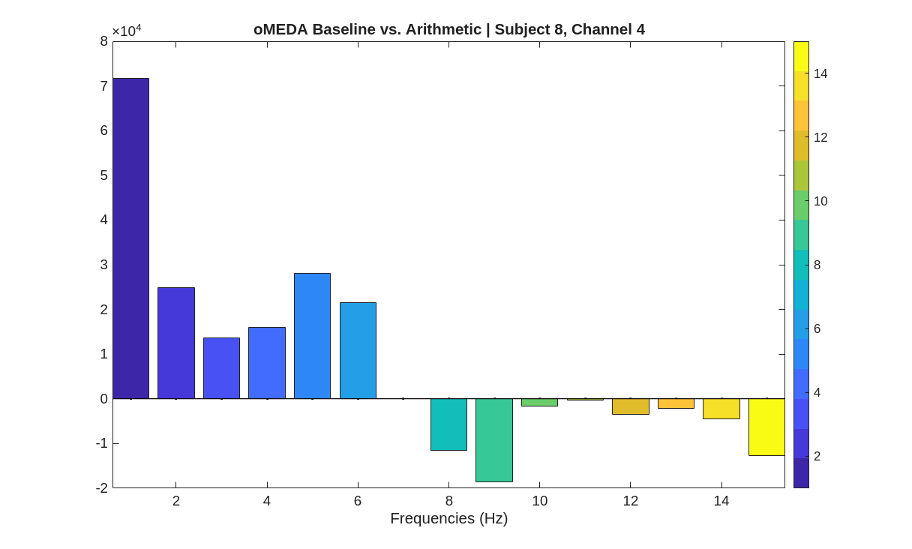
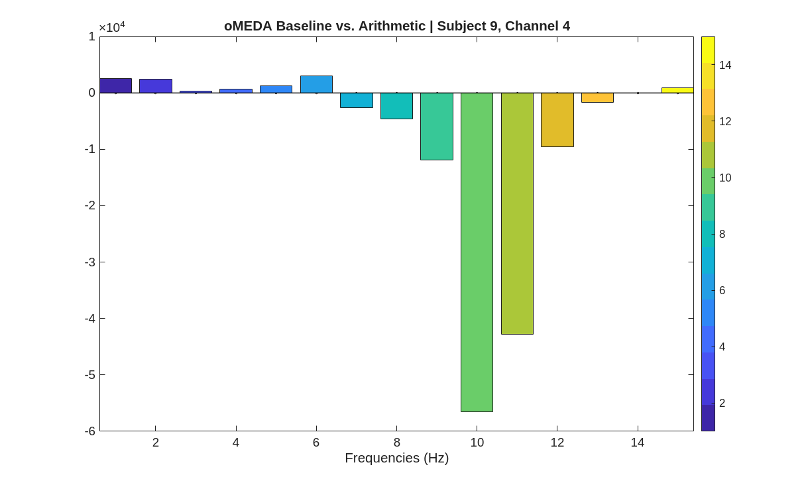
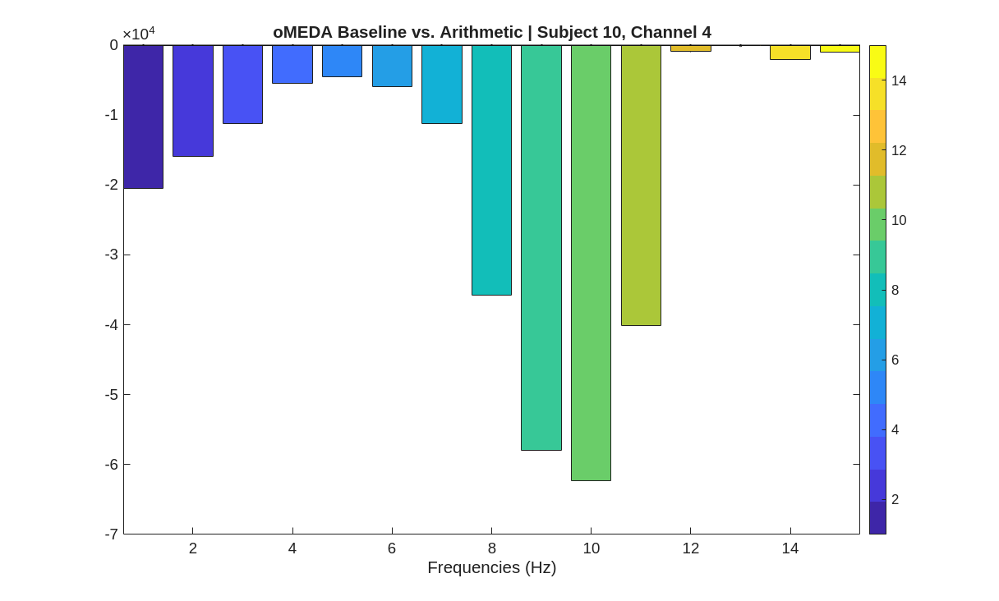
if true [~, idx] = sort(freqs_filtered); plotVec(omeda_vec(idx), 'ObsClass', freqs_label(idx)); title("oMEDA Baseline vs. Arithmetic: Frequencies") [~, idx] = sort(channels_filtered); plotVec(omeda_vec(idx), 'ObsClass', channels_label(idx)); title("oMEDA Baseline vs. Arithmetic: Channels") [~, idx] = sort(subjects_filtered); plotVec(omeda_vec(idx), 'ObsClass', subjects_label(idx)); title("oMEDA Baseline vs. Arithmetic: Subjects") end
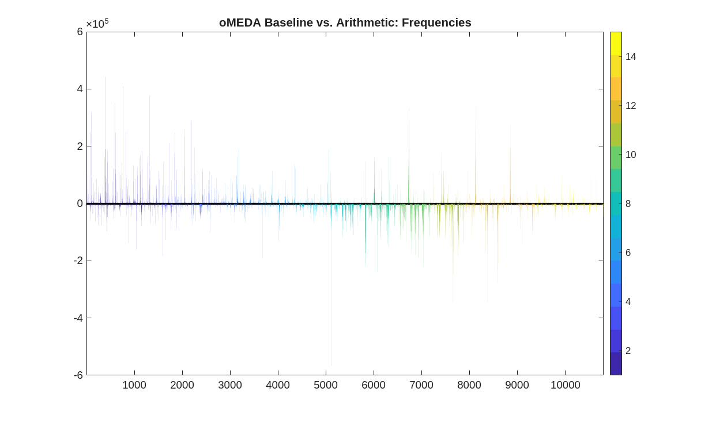
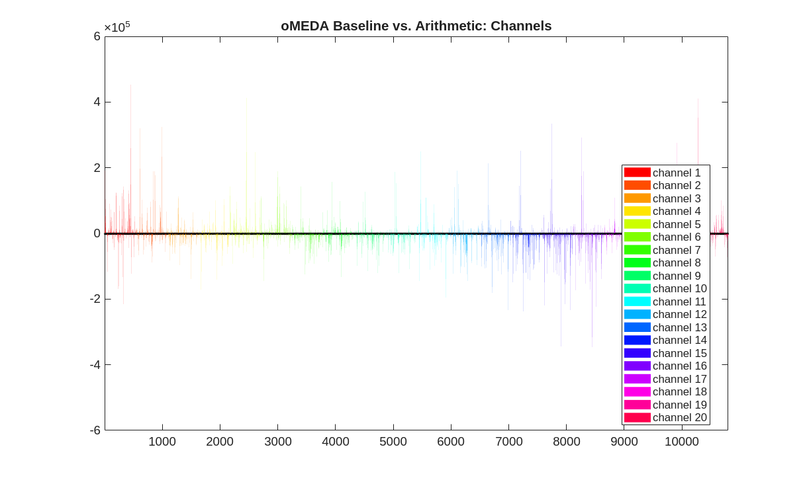
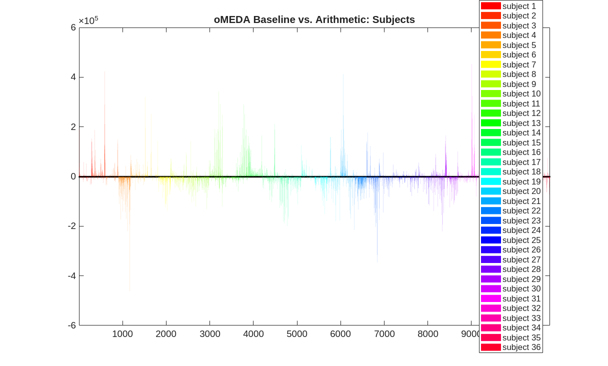